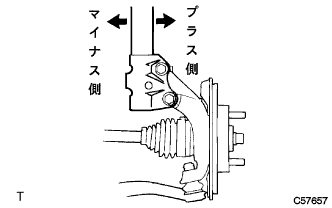

Front wheel alignment (4WD) adjustment |
| 1. Tire inspection |
reference| 2. Car high inspection |
 |
Move the corner of the vehicle up and down widely, calm down the suspension, and check the vehicle height.
| Tire size | A dimension -B dimensions [MM] | D Dimension-C dimensions [MM] |
|---|---|---|
| 175/70R14 | 92 | 39 |
| 3. Side slip inspection |
Check the side slip with a side slip tester.
In the case of outside the reference value, check the wheel alignment.
| 4. Toin inspection |
Shake the vehicle and stabilize the vehicle.
Push the vehicle straight and move forward to move forward.
 |
The guideline of the toein gauge is set on the back of the tire according to the front wheel axis center height.
The tread center is applied to the rear of each front tire, and the distance between the marks (B dimensions) is measured.
Press the vehicle slowly to move forward and rotate the front wheels 180 °.
 |
The distance between the marks (A dimension) is measured in the front of the vehicle.
Seeking to in.
| 5. Tour -in adjustment |
 |
Measure the length of the screw part of the left and right rack ends.
Remove the rack boots clip.
Loosen the tie rod end rock nut.
If the left and right differences between the rack end screws are not the standard, make adjustments.
If the measured value of the to -in is out of the out side, adjust the rack end with the shorter dimensions in the direction of extending.
If the measured value of the to -in is out of the in -side, adjust the rack end with the longer dimensions.
Check the toe -in again.
Turn the left and right rack ends in the opposite direction of each and adjust so that the to -in enters within the reference value.
Tighten the tie rod end rock nut.
 |
Use the pliers to attach the clip to the range of the figure.
| 6. Wheel cut angle inspection |
 |
Set the turning radius gauge.
Inspect the cutting angle of the wheel.
| Inside (inspection range) | Outside (reference) |
|---|---|
| 39 ° ± 2 ° | 34 ° |
| 7. Camber, casters, king pin angle inspection |
Remove the wheel cap or center ornament.
Lift up the vehicle in a flat place.
Attach a tire clamp compen seta (TCK-01).
Turn the clamp dial of the tire clamp compen seta and spread the tire clamp arm.
 |
Turn the dial, match the two lower claws to the wheel size, apply the lower part of the wheel rim to the upper side claw according to the wheel rim.
 |
Turn the clamp dial, shrink the tire clamp arm and attach it to the tire.
Attach the removal prevention wire to the wheel air valve.
Correct the tire clamp compen seta.
 |
Turn the correction dial of the tire clamp compen seta and adjust it within the range of the Mecha Zero line (red line).
 |
Attach the camber caster king pin gauge to the mounting plate of the tire clamp compen seta and match the matching.
 |
Rotate the wheel a little, match the horizontal bubbles of the camber caster kinging pin in the center, adjust the caster bubbles to 0 ° with the adjusted screw of the camber caster kinging pin.
 |
Rotate the wheels 180 °, match the combination of the camber caster kinging pin Gauge and the tire clamp compen seta, and adjust the horizontal bubbles.(*1)
 |
The caster bubbles in the above state are read, and the correction dial of the tire clamp compen seta is turned so that the value is 1/2 of the value.(*2)
Repeat the procedure (*1) and (*2), and even if the scale of the caster bubbles is 180 ° positively, the set of the camber caster kinging pin is completed if the wheel is 180 ° positively.
Set the turning radius gauge and drop the vehicle.
Inspect camber, casters and king pin angles.
| Camber | caster | King pin angle |
|---|---|---|
| -0 ° 40 '± 45' | 2 ° 00 '± 45' | 10 ° 15 '± 45' |
Remove the camber caster king pin gauge and tire clamp compen seta.
Attach a wheel cap or center ornament.
| 8. Camber adjustment |
Jack the vehicle and remove the front tire.
 |
Remove the bolt and separate the speed sensor and flexible hose.
 |
Loosen the two mounting nuts on the shock absorbarower side.
|  |
Move the lower side of the shock absorber and adjust the camber with the rubber of the bolt and the bolt hole in the steering knuckle.
|
Tighten two nuts.
|
Attach a flexible hose and a speed sensor with bolts.
Attach the front tire.
Jack the vehicle, shake up and down several times, and calm down the suspension.
Check the camber.
In the case of the reference value, the toe -in inspection should be performed.
In the case of outside the reference value, jack up to remove the front tire, cut the speed sensor and flexible hose separately, and perform the following work.
 |
Remove two and two bolts on the shock absorbarower side.
  |
Select two adjusting bolts and insert them from the front of the vehicle.
| Adjasting bolt | Part number | Bolt diameter (mm) | Adjustment |
|---|---|---|---|
| A | 90105-14146 | 13 | ± 15 ' |
| B | 90105-14147 | 12 | ± 30 ' |
| Camber adjustment amount | Set bolt | 90105-14146 | 90105-14147 |
|---|---|---|---|
| -1 ° 00 '--45' | 1, 2 | ||
| -45 '-30' | 1 | 2 | |
| -30 '-15' | 1 | 2 | |
| -15' -0 ' | 1 | 2 | |
| 0'-15 ' | 1 | 2 | |
| 15'-30 ' | 1 | 2 | |
| 30'-45 ' | 1 | 2 | |
| 45'-1 ° 00 ' | 1, 2 |
|
Attach 2 nuts.
|
Attach a flexible hose and a speed sensor with bolts.
Attach the front tire.
Jack down the vehicle, shake up and down several times, and calm the front suspension.
Check the camber again.
Inspect the toin.
Check the side slip.